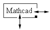

Controlling the Width of a Text Region |
As you type into a text region, the region continues to grow until it encounters the right margin; the lines then wrap. You can change the width of text regions by several methods.
| Resizing a text region |
Select the text region.
Move the cursor to a handle on the side of the region. It should change to a double-headed arrow.

Drag the mouse to the right or left to change the size of the text region.
Click in the text region where you want the text region to wrap.
Press [Ctrl] [Enter].
Click in the text region.
Choose Properties from the Format menu.
Click on the Text tab.
Check "Occupy Page Width."
The text region expands to fit the width of the page and moves other regions out of the way.
Once a text region has been created, changing the right margin has no effect on its width.